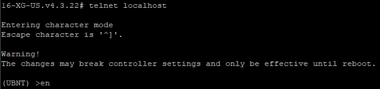
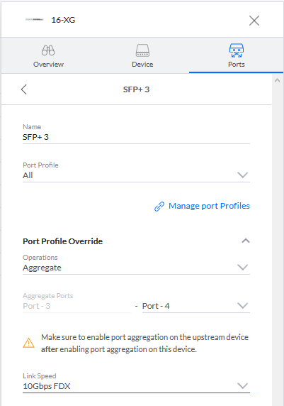

Proxmox and UniFi: LACP, VLANs, and Bridges
I’ve been having some issues with my UniFi US-16-XG 10g SFP+ Switch. Occasionally, for no reason, one member of an LACP link will drop with Tx/Rx errors, or revert from 10g to 1g and drop out of the LACP bond, or simply stop working altogether. This has happened on my Proxmox servers, on my TrueNAS Storage server, on the connection from my PFSense Router, and even when I tried from another UniFi switch, or a gigabit HP switch.
At first I thought it was the cheap Direct-Attach Cables (DACs) I bought for something like $10 on Amazon. So I did the logical step of replacing literally all of them with known-compatible SFP+ Fiber modules. The problem was, I saw identical behavior afterwards, and now I knew it wasn’t SFP module compatibility. There was something else going on here.
After looking around, I found this help doc. It gives me enough of an idea of what is supposed to happen to try and figure out the problem. While the GUI doesn’t give any detailed errors, the commands on that page were able to point me in the right direction.
To access the US-16-XG’s terminal for debug purposes, you first have to SSH in, then telnet to localhost. This gives you access to the CLI. Any changes here seem to be reset after reboot, which isn’t too surprising, since the controller would wipe them anyways.

The terminal for the UniFi Switch
From there, you can run various debug commands, and see what exactly the ‘Errors’ are.
The Switch
The US-16-XG has 12 SFP+ ports and 4 RJ-45 ports, all 1/2.5/10g capable. I currently have one connection to my 48-port switch which serves everything else in my house, then two links to each of my main three Proxmox VM servers. and two to my storage server(s).
Setting up LACP on the switch is fairly simple. You simply switch the port to Aggregate mode, then select the link speed you want. That’s pretty much it.

The UniFi configuration menu
This presents a problem though. There’s no easy way to configure specific items once the link is aggregated, and you can’t even rename the other ports in the bond, so all of that needs to be done before they are all entered into the LACP link.
In the configuration above, the Port Profile is set to All. That’s UniFi speak for an 802.1q VLAN trunk, using all the configured VLANs. I have quite a few VLANs configured, mostly just to play around with them, or to separate different devices from each other.
Proxmox
In Linux, bond-mode 4 is 802.3ad, not LACP. 802.3ad is the teaming protocol, while LACP is the process of making those physical links into one logical link on both ends of the connection, adding link redundancy. 802.3ad without LACP is often called Static 802.3ad, or a Static Bond.
The UniFi switch does not support Static 802.3ad, only LACP. That means you need to make sure the LACP options are in the network configuration.
Here’s an example configuration, from my main VM server.
# /etc/network/interfaces
# Make sure the 'bonding' kernel module is active
# and add 'bonding' to /etc/modules
auto lo
iface lo inet loopback
# Onboard Gigabit Ethernet
# Not in use because it has issues
iface enp4s0 inet manual
# Port 1 of SFP+ NIC
auto enp65s0f0
iface enp65s0f0 inet manual
# Port 2 of SFP+ NIC
auto enp65s0f1
iface enp65s0f1 inet manual
# The LACP Bond
auto bond0
iface bond0 inet manual
bond-mode 4
bond-miimon 100
bond-downdelay 200
bond-updelay 200
# LACPDUs are in Fast mode
# This seems to work for UniFi
# Other switches may need 0 (slow mode)
bond-lacp-rate 1
bond-xmit-hash-policy layer2+3
bond-slaves enp65s0f0 enp65s0f1
auto vmbr0
iface vmbr0 inet manual
bridge_ports bond0
bridge_stp off
bridge_fd 0
# Honor VLAN tags
bridge_vlan_aware true
# Dedicated Storage Network
auto vmbr0.60:254
iface vmbr0.60:254 inet static
address 10.0.60.1/24
# The Management Interface
auto vmbr0.101:254
iface vmbr0.101:254 inet static
address 10.1.2.1/23
gateway 10.1.3.254
The important part to connect to the switch is the configuration of the bond0 interface. The issue seems to have been that, without the bond-lacp-rate item, LACPDUs weren’t being transmitted at all.
Other Devices
I mentioned I was also having issues with a TrueNAS server and an HP switch.
The TrueNAS server issue seems to be related to the way TrueNAS boots with the interfaces enabled, and starts sending the LACPDUs later. The switch marks the errors, but doesn’t clear them when the LACP link is established.
The HP switch just doesn’t seem to care what order things happen in. My working theory is that one or the other doesn’t support LACP Fast Mode, which sends the LACPDUs at a much faster rate, and one or the other cannot do anything but fast mode.
Regardless, I don’t appear to be the only person having these issues. Numerous other bugs and issues have been noted on Ubiquiti’s forums, and on Reddit.
Conclusion
UniFi switches have always had issues with more complex configurations. Whether it’s 10G issues on their own SFPs, or issues with LACP compatibility, I and a lot of other people have had a lot of issues with the way UniFi implements their switches.
Unfortunately, for what I need, they’re the only option. Aruba’s InstantOn doesn’t have 10G switches at this point, Netgear, DLink, and MikroTik don’t have the features or reliability I need, and buying used enterprise switches is both expensive and loud for something that sits about a meter from my head.
One day, hopefully either my switch works better, or there’s an alternative that just works. Until then, I’ll be finding weird stuff like this.